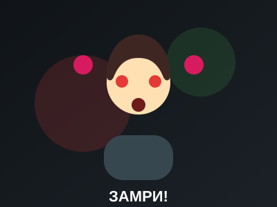

🪆 Замри! — кукла-судья для «Свет-стоп»

«Замри!» — Android-приложение, которое превращает телефон в полностью автономного судью дворовой игры «Свет-стоп» (в духе «Красный свет, зелёный свет»): кукла на экране поворачивается спиной и лицом, командует голосом, а фронтальная камера следит за игроками во время красного света и ловит любое движение.
🎮 Как это работает
- Кладёте телефон на стол экраном и камерой к игрокам, жмёте «Начать игру»;
- Отсчёт 3‑2‑1 даёт время отойти;
- Кукла отворачивается — можно двигаться (зелёный свет, случайная длительность);
- Кукла поворачивается и говорит «Стоп!» — все замирают, включается детектор движения;
- Если кто-то шевельнулся — приложение делает снимок, обводит область движения красным крестом, голосом называет сектор («Слева, второй!») и сохраняет фото в архив;
- По окончании игры — статистика нарушений и архив-галерея всех снимков сессии.
Компьютерное зрение без тяжёлых моделей: CameraX ImageAnalysis + покадровое дифференцирование (frame differencing) в оттенках серого, пороговая бинаризация и лёгкая морфология (erode/dilate) — работает в реальном времени на любом современном телефоне, детектор активен только во время красного света.
Голос и звук: Android TextToSpeech озвучивает положение нарушителя динамически по номеру сектора, плюс короткие оригинальные звуковые сигналы старта/стопа фаз.
Архитектура: MVVM, ViewModel + StateFlow, Room для метаданных нарушений, снимки — в MediaStore (Pictures/DollGame).
📱 Скриншоты
⬇️ Установка APK
APK собирается автоматически через GitHub Actions при каждом обновлении проекта и прикладывается к релизам репозитория.
Скачать APK из GitHub ReleasesПосле скачивания откройте APK на Android-устройстве и разрешите установку из неизвестных источников для браузера/файлового менеджера, которым вы его открыли.
🔐 Разрешения
- Камера — обязательно, для отслеживания движения игроков;
- Запись звука — зарезервировано под будущий анализ звука;
- Доступ к медиа (запись изображений) — только на Android 9 и ниже, где сохранение в галерею требует классического разрешения; на современных версиях используется MediaStore без дополнительных разрешений.
Исходный код проекта: projects/zamri/ в этом репозитории —
стандартный Gradle Kotlin DSL проект (модуль app/), подробности сборки
и архитектуры — в README проекта.
Все звуки и образ куклы — оригинальные, без использования материалов из фильмов и сериалов.